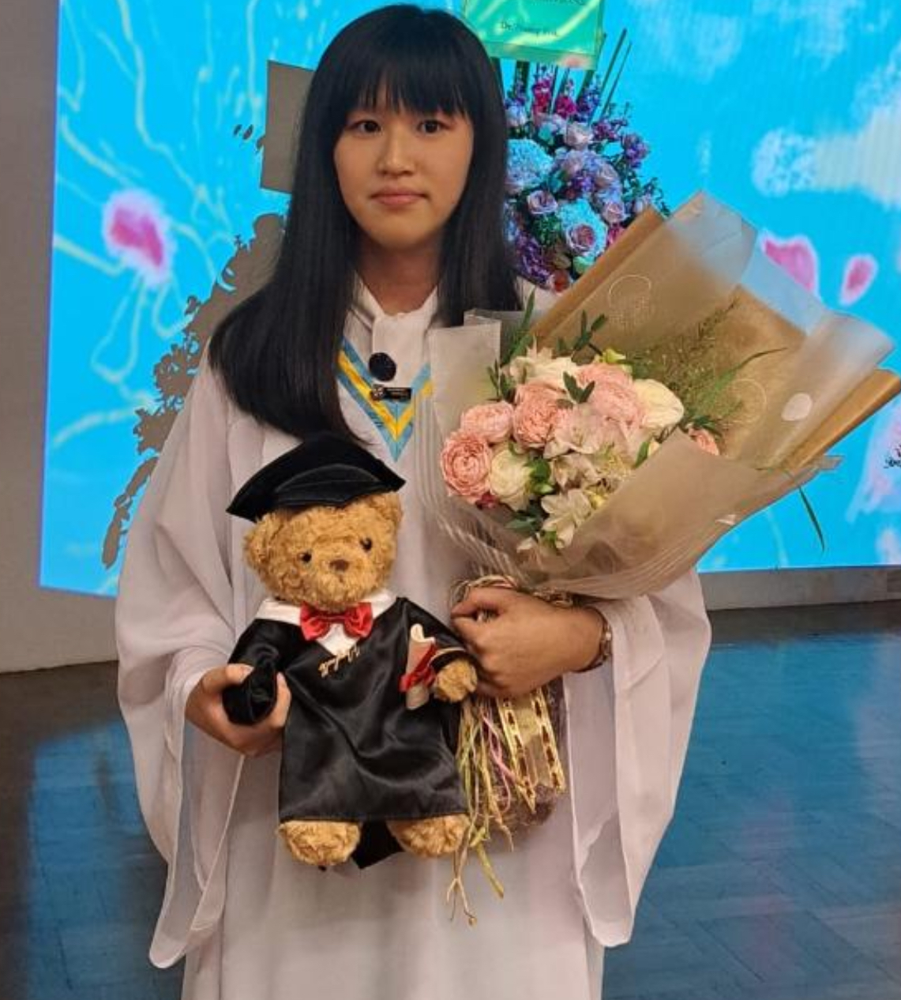

Ms Charlotte Yuen
Founder & Co-Director
Psychology, The University of Sydney · Graduate, Maryknoll Convent School
Hello everyone, I am Charlotte Yuen, the founder of Be Positive HK. When I was 16, I founded Be Positive HK in 2023, a student-led initiative which aims to promote mental well-being, as well as encouraging teenagers who are struggling with mental health issues based on my own experiences. I hope to empower individuals by creating safe spaces for open dialogue, support, and education around mental health issues. I also believe that by sharing experiences and knowledge, we can break down stigma and encourage a culture of understanding and empathy.